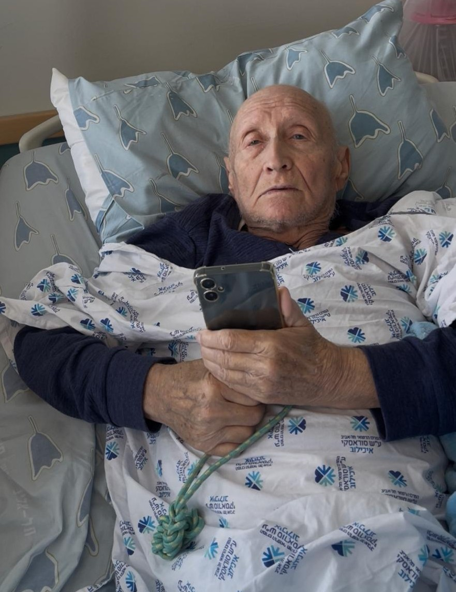
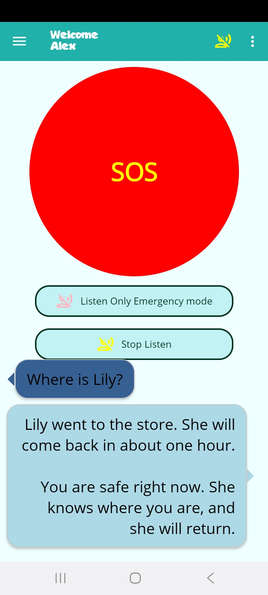
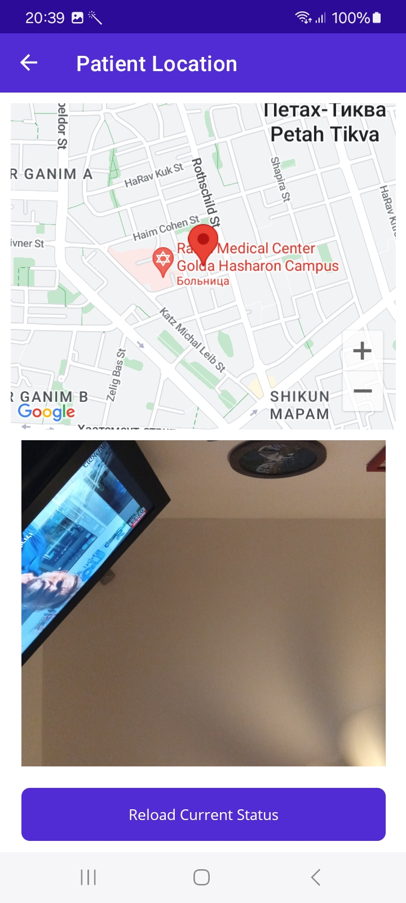
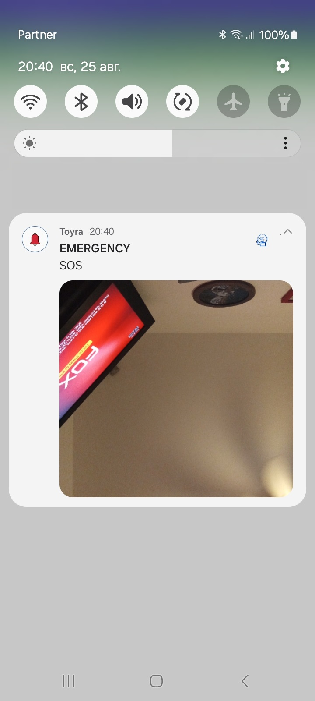

Repeated questions
He could ask the same question and not remember the answer.
Own Story

His symptoms changed everyday life for the whole family: memory loss, loss of interest, difficulty understanding time and place, trouble communicating, and fear of staying alone.
Requires Android 8.0 or higher for caregiver and patient
My father Alex's problems
Alex asked the same questions again and again, could not reliably answer or dial calls, lost interest in activities, forgot his birthday and address, did not know how to get home, and did not agree to stay home alone.
He could ask the same question and not remember the answer.
He could not always answer calls or call family members himself.
He could forget the day, time, address, or how to return home.
He looked for his wife constantly and resisted staying home alone.
Common problems
Toyra solution
Toyra combines safety, communication, reminders, entertainment, and AI assistance in one Android app flow for the patient and caregiver.
Patient SOS and condition alarms reach the caregiver quickly.
Check the patient location and receive snapshots when needed.
Calming prompts and mental speech support help reduce anxiety and isolation.
Toyra also helps preserve LO memories and life stories before they disappear.
Outbound calls can be started by voice recognition or simple on-screen buttons.
Music, messages, and cognitive activities can be triggered by schedule or request.
Two modes
Caregiver and Patient are linked using the patient's phone number. The patient gets a simple front door for help. The caregiver gets remote visibility and action tools.



Care expertise behind the product
Toyra combines hands-on dementia care knowledge with practical service design for elderly support, emergency response, telemedicine, and home care operations.
Specialist input from geriatric care and elderly-service project leaders.
Install Toyra and connect patient and caregiver phones today.
Download Toyra now